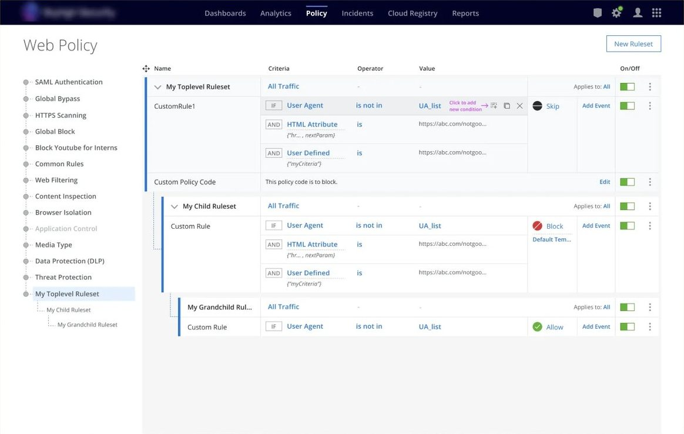
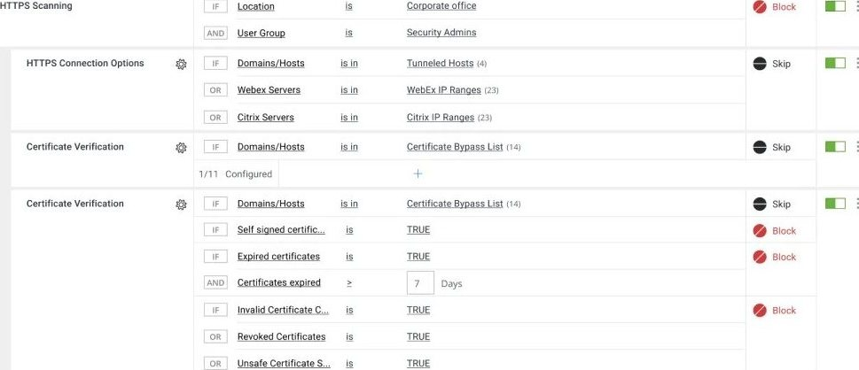

Web Security Rule Builder
Skyhigh Security2021–22
Legacy on-premise policies moved to a cloud gateway, built as rules in the interface instead of code.

At a glance
- ProductWeb Policy, the rule builder in a cloud Secure Web Gateway
- UsersWeb security administrators in InfoSec teams
- My roleUX Architect, leading UX for the product
- TeamProduct manager, engineering lead, UX researcher and design system lead
- Research7 customers, around 23 participants
- UX work7–8 months, including customer validation
- Outcome[Replace: one line on what shipped and when]
The problem
Administrators set web policy with switches. Anything more complex meant learning the product’s own code language, or paying for professional services hours.
Web Policy controls traffic between a company’s network and the internet: what people can reach and download, and protection against malware and data leaving through uncontrolled web access.
[Replace: how moving legacy on-premise policies to the cloud gateway shaped the problem, and what was at stake for customers and the business]
The idea
A standard view between switches and code: complex rules, written in a usable interface.
The simple settings already worked well out of the box, so we kept them. Code stayed for the most complex cases. The rule builder filled the space between, as a table of rules.
My role
We worked as a trifecta of product, engineering and UX. I led UX.
Within UX, a researcher ran the research sessions and documented findings with me, and I worked with the design system lead to decide which components to reuse and which new ones the builder needed.
[Replace: two or three calls that were mine, not the team’s]
Research
Before the detail, we tested the direction with customers.
We built a high-level wireframe and ran separate sessions with 7 customers, around 23 participants, to get feedback on the proposal, find the key pain points and prioritise features. Product management and UX chose the first-release features from what we heard.
[Replace: the top pain points, and one finding that changed the design]

Structure first
Before the screens, I mapped the structure underneath them.
Dependencies
Web Policy sits in a suite of security apps on one platform. Its rules use configurations, such as SAML and HTTPS settings, and lists of URLs, IPs and certificate authorities, all maintained elsewhere. I first had to understand how both are built.
Hierarchy
The hierarchy decides where information, actions and messages belong. A ruleset filters traffic, and only that traffic reaches its rules; the rest moves on to the next ruleset. Each rule joins IF conditions with AND or OR and ends in one action.
Anatomy of a condition
A condition is the smallest unit of a rule: a criteria, an operator and a value, each depending on the one before. Mapping every combination laid out the interactions underneath.
Building a rule
Complex rules meant stitching several interactions together, carefully.
A library of ready rules
The old app had predefined rules administrators could configure. We kept them in a library, to import into a policy alongside custom rules.

Three ways to add a rule
From the library, custom in the interface, or custom in code for the most complex cases.

Nested rulesets
The policy works by filtering web requests and responses, so rulesets can nest inside each other.

Scoping
Rules can be scoped by source and destination ports, user groups, location and many more criteria.

Key views


The trade-off
[Replace: one call where business or engineering needs won over a UX principle]
[Replace: what it cost users, and how I flagged the caveat]
Outcome
- Shipped[Replace: what shipped and when]
- ValidatedPrototypes took customers, front-end engineers and subject-matter experts through the flows. [Replace: what changed after the validation sessions]
- Judged by[Replace: how success was judged]
“Appreciate the efforts you have put in collaborating with stakeholders, research, organizing tasks and designing the Std View wireframes.”
[Replace: name] “Thanks for coordinating and working with the team on all UX activities for UCE and providing information in a timely manner.”
[Replace: name]
Looking back
[Replace: what I’d do differently now]
The full story
There is more to it than one page. I’m glad to walk you through the whole process on a call.
- Emailchetanshridhar@gmail.com
- More workSelected work